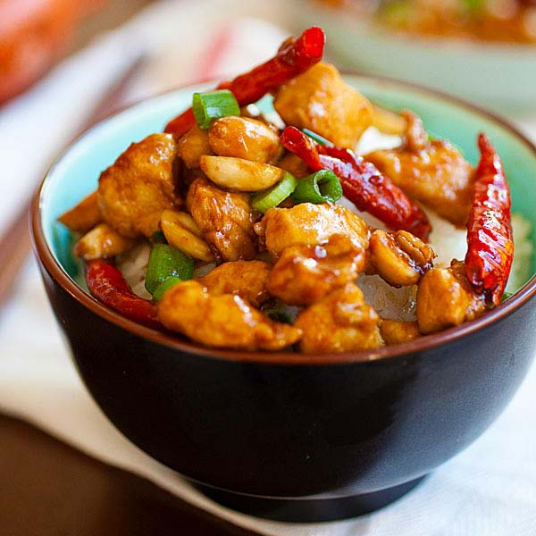

Kung pao Chicken

Description
raditionally, this Chinese chicken dish is a dry-stir fry
— not a lot of sauce is added into Kung Pao chicken.
However, with the amount of flavour explosions happening in this dish, you don’t miss OR want any more sauce. There’s so much flavour in this it’s crazy!
Ingredients!
- Chicken broth or stock (use low sodium)
- Light soy
- Dark Soy Sauce
- Hoisin Sauce
- Chinese black vinegar
- Chinese wine (Shaoxing)
Instruction
- Combine all ingredients for the chicken in a shallow bowl; cover and marinate for 10 minutes (if time allows).
- Whisk sauce ingredients together until sugar dissolves; set aside.
- Heat a large skillet, pan or wok over high heat. Add 2 tablespoons of cooking oil, allow to heat up, then add marinated chicken. Fry chicken for 3-4 minutes while occasionally stirring, until edges are browned. Remove from heat and set aside.
- Add remaining cooking oil into the same pan/wok. Stir in garlic, ginger, chili diced peppers (capsicums) and Sichuan peppercorns and stir fry for 1 minute.
- Give the prepared sauce a mix, then pour it into the pan and bring it to a boil while stirring.
- Once it begins to thicken slightly, add chicken back into the pan/wok and mix all of the ingredients through the sauce until the chicken is evenly coated and sauce has thickened, (about 2 minutes).
- Stir in green onions, peanuts and sesame oil. Toss well and continue to cook for a further 2 minutes to infuse all of the flavours together.
- Serve immediately with steamed/cooked rice or fried rice!